금속재료산업기사 (2008-03-02 기출문제)
1과목: 금속재료
1. 과냉도가 큰 금속의 경우 융체에 진동을 주거나 작은 금속편을 첨가함으로써 결정의 핵생성을 촉진시키는 방법은?
- 시효(aging)
- 접종(inoculaion)
- 확산(diffusion)
- 회복(recovery)
(정답률: 75%)

2. 저융점 섬유강화 금속(FRM)에 사용되는 섬유의 종류가 아닌 것은?
- 보론
- FeS
- SiC
- Al2O3(알루미나)
(정답률: 66%)
3. 용질 원자가 침입 혹은 치환형태로 고용되어 격자의 왜곡이 발생할 때 생기는 현상이 아닌 것은?
- 전기저항이 증가한다.
- 합금의 강도, 경도가 커진다.
- 소성변형에 대한 저항이 크다.
- 전도전자가 산란되어 이동을 쉽게 한다.
(정답률: 69%)
4. Ni 35~36%, C 0.1~0.3%, Mn 0.4% 와 Fe 합금으로 20℃에서 열팽창계수가 0.9×10-6이고, 바이메탈, 시계진자, 줄자, 계측기 부품 등에 사용하는 불변강은?
- 인바(invar)
- 니칼로이(nicalloy)
- 퍼멀로이(permalloy)
- 플래티나이트(platinite)
(정답률: 70%)
5. 철이 910℃에서 α상에서 γ상으로 결정격자가 변화하는 변태는 무엇이라 하는가?
- 자기변태
- 동형변태
- 동소변태
- 동질변태
(정답률: 88%)
6. 다음 중 치과용(치열 교정용)이나 안경테 등에 사용되는 합금은?
- 방진 합금
- 오일리스 합금
- 초탄성 합금
- 자성유체 합금
(정답률: 87%)
7. 다음 중 대표적인 비철계 초소성 재료가 아닌 것은?
- 알루미늄(Al)계
- 티타늄(Ti)계
- 니켈(Ni)계
- IM 744 계
(정답률: 82%)
8. 내열용 Al 합금으로써 조성은 Al-Cu-Mg-Ni 이며, 주로 피스톤에 사용되는 합금은?
- Y 합금
- 켈밋
- 오일라이트
- 화이트메탈
(정답률: 84%)
9. 전자강판(규소강판)에 요구되는 특성으로 틀린 것은?
- 투자율 및 포화자속밀도가 낮을 것
- 용접성 등의 가공성이 좋을 것
- 자화에 의한 치수변화가 적을 것
- 사용 중 자기적 성질의 변화가 적을 것
(정답률: 85%)
10. 다음 중 제품과 그에 따른 합금의 주성분이 틀린 것은?
- 황동 : Cu + Zn 합금
- 모넬메탈 : Al + Si 합금
- 청동 : Cu + Sn 합금
- 스테인리스강 : Cr + Ni 합금
(정답률: 77%)
11. 황동의 가공제품에서 나타나는 자연균열에 대한 방지책으로 옳은 것은?
- 습기 또는 수은 속에 보관한다.
- 탄산가스나 암모니아 분위기속에 보관한다.
- 약 180~260℃에서 응력 제거 풀림처리한다.
- 아연이 많은 경우 높은 온도에서 담금질처리한다.
(정답률: 77%)
12. WC-Co 합금에서 Co의 첨가비율에 따라 기계적 성질의 변화를 옳게 설명한 것은?
- Co 첨가량이 증가할수록 내마모성은 증가한다.
- Co 첨가량이 증가할수록 항절력은 감소한다.
- Co 첨가량이 증가할수록 경도는 감소한다.
- Co 첨가량이 증가할수록 항압력은 증가한다.
(정답률: 36%)
13. 다음 중 형상기억합금에 대한 설명으로 틀린 것은?
- Ti-Ni 합금은 형상기억합금으로 이용되고 있다.
- 형상기억효과에는 일방향(one way)성의 효과도 있다.
- 형상기억합금은 마텐자이트의 역변태를 이용한 것이다.
- 형상기억합금은 항복영역 도중에 변형응력을 제거하면 소성변형이 남는 것으로 특정한 온도 이상으로 가열하면 원상태로 회복되지 않는 것을 말한다.
(정답률: 65%)
14. 다음 금속 중 비중이 가장 큰 것은?
- Li
- Al
- Ir
- Fe
(정답률: 78%)
15. 재료를 열간 또는 냉간가공하기 위하여 회전하는 롤러사이에 금속재료의 소재를 통과시켜 성형하는 방법은?
- 압축가공
- 인발가공
- 압연가공
- 프레스가공
(정답률: 85%)
16. 체심임방격자의 단위격자 내의 원자수와 충전율은?
- 원자수 : 4, 충전율 : 74%
- 원자수 : 2, 충전율 : 74%
- 원자수 : 4, 충전율 : 68%
- 원자수 : 2, 충전율 : 68%
(정답률: 83%)
17. 강(Steel)에 미치는 성질 중 망간(Mn)의 영향이 아닌 것은?
- 강의 점성을 증가시킨다.
- 담금질 효과를 적게 한다.
- 강의 강도, 경도, 인성을 증가시킨다.
- 고온에서의 결정 성장을 감소시킨다.
(정답률: 66%)
18. 영구자석으로 널리 사용되는 합금으로 MK 강이라고도 하는 소결강은?
- 알니코합금
- 규소강
- 철-망간합금
- 구리-베릴륨합금
(정답률: 71%)
19. 황동의 평형상태도상에는 6개의 상이 있다. 이 중에서 α상의 결정구조는?
- 체심입방격자
- 면심입방격자
- 조밀육방격자
- 정방격자
(정답률: 52%)
20. 다음의 강 중에 탄소함량은 중탄소이며, 바나듐(V)을 첨가하여 열피로성을 개선한 열간 가공용 금형강은?
- SKH51
- STD11
- STS
- STD61
(정답률: 82%)
2과목: 금속조직
21. 금속 내에 원자공공(vacancy)이 생성되는 경우가 아닌 것은?
- 격자점에 있던 원자가 금속표면의 빈자리로 이동될 때
- 격자점에 있던 원자가 결정립계로 이동될 때
- 금속 내의 엔트로피가 감소될 때
- 칼날전위의 상승운동으로 인해
(정답률: 55%)
22. 응력(stress)-변형량(strain) 곡선에서 완전강소성체를 나타내는 것은?
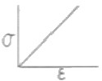
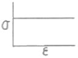
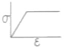
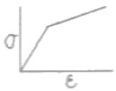
(정답률: 56%)
23. 액체금속이 응고할 때 용융점보다 다소 낮은 온도에서 응고가 시작되는 현상은?
- 엠브리오(embryo)
- 주상정(columnar crystal)
- 수지상정(dendrite)
- 과냉각(super cooling)
(정답률: 87%)
24. 다음 중 전율고용체의 상태도로 옳은 것은?
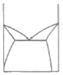
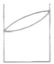
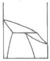
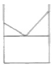
(정답률: 82%)
25. 순철에서 [γ]⇆[δ](1400℃)로 변태하는 점은?
- A1 변태점
- A2 변태점
- A3 변태점
- A4 변태점
(정답률: 76%)
26. 다음 중 금속간 화합물에 대한 설명으로 틀린 것은?
- 성분금속의 특성이 없어진다.
- 일반적으로 성분금속의 융점보다 낮다.
- 복잡한 결정구조를 가지며, 소성변형이 어렵다.
- 주기율표 중의 동족원소는 거의 화합물을 형성하지 않는다.
(정답률: 61%)
27. 강 중에 탄소량이 증가함에 따라 기계적 성질에 미치는 영향으로 옳은 것은?
- 연신율의 증가
- 인장강도의 감소
- 경도의 감소
- 충격값의 감소
(정답률: 53%)
28. 다른 종류의 원자 A, B가 접촉면에서 서로 반대방향으로 이루어지는 확산은?
- 반응확산
- 전위확산
- 자기확산
- 상호확산
(정답률: 74%)
29. [그림]과 같이 면심입방격자(FCC)로 된 A원자와 B원자의 규칙격자 원자배열에서 A와 B의 조성을 나타내는 것은?
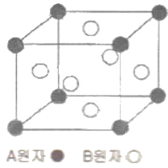
- AB
- AB3
- A3B
- AB2
(정답률: 56%)
30. 회복과정에서 축적에너지의 양에 대한 설명으로 옳은 것은?
- 불순물 원자를 첨가할수록 축적에너지의 양은 증가한다.
- 가공도가 클수록 축적에너지의 양은 감소한다.
- 높은 가공온도에서의 변형은 축적에너지의 양을 증가시킨다.
- 결정입도가 감소함에 따라 축적에너지의 양은 감소한다.
(정답률: 52%)
31. 다음 금속 중 강자성체가 아닌 것은?
- Fe
- Ni
- Co
- Sb
(정답률: 75%)
32. Cu-Ni의 전율고용합금에 대한 설명으로 틀린 것은?
- Cu와 Ni의 결정구조는 같다.
- Ni의 인장강도가 Cu보다 2배 정도 높다.
- Ni의 원자 반경이 1.25Å, Cu의 원자반경이 1.28Å 정도로 차이가 적다.
- Cu와 Ni이 합금상태에서 결정격자의 뒤틀림이 나타나 인장당도는 감소한다.
(정답률: 61%)
33. 다음 중 규칙-불규칙변태에 대한 설명으로 틀린 것은?
- 전체가 완전히 규칙화된 상태를 장범위규칙이라 한다.
- 규칙상태와 불규칙상태의 상호간의 변화를 규칙-불규칙 변태라 한다.
- 불규칙 배열에서 규칙배열로 형성되기 시작하는 온도를 전이 온도라 한다.
- 결정이 완전히 불규칙상태인 것은 1, 완전히 규칙상태인 것을 0으로 하여 규칙화의 정도를 나타낸다.
(정답률: 71%)
34. 다음 중 정결합이 아닌 것은?
- 치환형 불순물 원자(Substitutional atom)
- 격자간 원자(Interstitial atom)
- 원자공공(Vacancy)
- 전위(Dislocation)
(정답률: 75%)
35. 다음 3원계 상태도에서 0합금의 조성 중 Q 합금의 분량은?
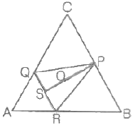
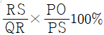
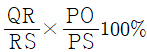
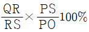
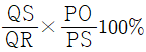
(정답률: 50%)
36. 0.8% 강이 오스테나이트에서 펄라이트로의 조직변화과정을 설명한 중 틀린 것은?
- 오스테나이트 입계에서 핵이 발생한다.
- 시멘타이트 주위엔 탄소 부족으로 페라이트가 형성한다.
- 시멘타이트와 페라이트가 교대로 생성, 성장하여 층상구조를 형성한다.
- 시멘타이트 양과 페라이트 양은 대략 1:1 비율로 쳥성된다.
(정답률: 72%)
37. 입방격자 구조에서 조밀입방격자의 배위수는?
- 6
- 8
- 12
- 16
(정답률: 63%)
38. 냉간가공된 금속을 가열하면 가공으로 변화된 여러 성질이 가공전의 가까운 상태로 돌아가는데, 이와 같은 가열조작을 어닐링(Annealing)이라 한다. 일반적으로 어닐링에 의하여 그 성질이 원상태로 돌아가는 3단계과정의 순서로 옳은 것은?
- 결정의 회복→재결정→결정립성장
- 결정립 회복→결정립 성장→ 재결정
- 결정립 성장→재결정→결정의 회복
- 재결정→결정립 성장→결정의 회복
(정답률: 75%)
39. 다음 입방체에서 사선으로 표시된 면의 밀러지수는?
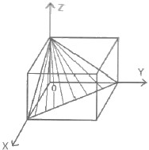
- (123)
- (101)
- (111)
- (010)
(정답률: 74%)
40. 강하게 냉간 가공된 금속의 전위밀도는 얼마까지 증가하는가?
- 103~104/cm2
- 105~106/cm2
- 107~108/cm2
- 1011~1012/cm2
(정답률: 50%)
3과목: 금속열처리
41. SM35C 의 화염담금질 경도(HRC) 값은?
- 30
- 50
- 70
- 90
(정답률: 78%)
42. 침탄 열처리를 의뢰한 작업 요구서에 CD-H-F-4.2로 표기되어 있을 때 이에 대한 설명으로 옳은 것은?
- 경도시험방법에서 시험하중 300G으로 측정하여 전경화층의 깊이가 4.2mm이다.
- 경도시험방법에서 시험하중 1kg 으로 측정하여 유효 경화층의 깊이가 4.2mm 이다.
- 마크로조직 시험방법으로 측정하여 유효 경화층의 깊이가 4.2μm이다.
- 마크로조직 시험방법으로 측정하여 전경화층의 깊이가 4.2μm이다.
(정답률: 56%)
43. 열처리형 알루미늄 합금의 질별 기호 중 T6 가 나타내는 의미는?
- 냉간가공 후 자연시효 처리한 것
- 고온가공 후 냉간가공 처리한 것
- 용체화 처리 후 인공시효 처리한 것
- 열간 가공 후 안정화 처리한 것
(정답률: 72%)
44. 강의 항온변태 곡선인 S곡선의 형태에 영향을 주는 요소가 아닌 것은?
- 첨가 원소
- 응력의 영향
- 최고 가열온도
- 조직학적 방법
(정답률: 62%)
45. [그림]과 같이 일정 온도로 유지한 열욕에 담금질하고 과냉의 오스테나이트가 염욕 중에서 항온 변태가 끝날 때 까지 항온으로 유지하고 공기 중에 냉각하는 방법은?
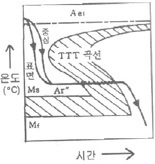
- 마퀜칭(Marquenching)
- 오스템퍼링(Austempering)
- 마템퍼링(Martempering)
- 오스포밍(Auforming)
(정답률: 69%)
46. 다음 중 질화처리 효과에 대한 설명으로 틀린 것은?
- 고온경도가 낮다.
- 변형이 거의 없다.
- 피로한도가 향상된다.
- 높은 표면경도를 얻을 수 있다.
(정답률: 59%)
47. 플라즈마 침탄의 특징을 설명한 것 중 틀린 것은?
- 피처리물의 표면이 깨끗하고 광휘처리가 가능하다.
- 플라즈마 침탄은 진공 중에서 실시하는 열처리이다.
- 불균일한 표면상태에서는 균일한 경화깊이를 얻지 못한다.
- 높은 탄소 용해도를 갖는 오스테나이트를 만들기 위해 약 930℃가 필요하기 때문에 가열된 챔버에서 열처리를 진행한다.
(정답률: 61%)
48. 합금공구강 중 STD11 의 담금질 온도[℃]로 가장 적당한 것은?
- 950~1⑤0℃
- 750~800℃
- 600~650℃
- 450~500℃
(정답률: 50%)
49. 펄라이트 가단주철의 열처리 방법으로 틀린 것은?
- 흑심 가단주철의 재열처리에 의한 방법
- 열처리 곡선의 변화에 의한 방법
- 분위기 조절에 의한 풀림 방법
- 합금 첨가에 의한 방법
(정답률: 49%)
50. 이온질화(ion nitriding)법의 특징을 설명한 것 중 틀린 것은?
- 질화속도가 비교적 빠르다.
- 수소가스에 의한 표면 청정 효과가 있다.
- 400℃ 이하의 저온에서도 질화가 가능하다.
- 글로우 방전을 하므로 특별한 가열장치가 필요하다.
(정답률: 74%)
51. 열처리할 때에 생기는 변형에 대한 설명으로 틀린 것은?
- 변형방지를 위해 프레스담금질, 롤러담금질 등을 시행한다.
- 공기담금질시 가장 변형이 많고 기름담금질, 물담금질 순서로 변형이 적다.
- 변형을 방지하기 위하여 변형을 예측하고 반대방향으로 변형시켜 놓는다.
- 축이 긴 제품은 수직으로 매달아 냉각하거나 분무 담금질하므로서 균일냉각이 되어 변함이 적어진다.
(정답률: 71%)
52. 다음 중 대량생산에 적합한 연속 열처리가 아닌 것은?
- 상형(box type)로
- 퓨셔형(pusher type)로
- 컨베이어형(conveyer type)로
- 세이커 하스(노상진동형)로
(정답률: 66%)
53. 열처리의 종류와 목적을 설명한 것 중 틀린 것은?
- 노멀라이징(Normalizing) 은 강을 표준상태로 하기 위한 열처리 조직이다.
- 풀림(Annealing)은 결정립을 조정하고 연화시키기 위한 열처리 조작이다.
- 담금질(Quenching)은 강을 강하게 하고 경도 향상을 목적으로 하는 열처리 조작이다.
- 뜨임(Tempering)은 내부응력 제거와 강도 및 취성증가를 목적으로 하는 열처리 조작이다.
(정답률: 77%)
54. 강의 담금질시에 발생하는 크랙(Crack)에 대한 설명으로 틀린 것은?
- 고탄소강보다는 저탄소상에서 담금질시 크랙의 발생율이 높다.
- 담금질할 강재에 비금속 개재물이 적을수록 크랙이 적게 발생한다.
- 성분 편석이 적을수록 크랙이 적게 발생한다.
- 담금질 온도가 높아지면 크랙이 잘 발생한다.
(정답률: 81%)
55. 철합금의 표면에 붕소를 확산시켜 붕소화물을 형성하는 침붕처리는 열충격분위기에서 균열이 발생할 가능성이 높다. 이를 방지하기 위한 바람직한 화합물층은?
- Fe2B + Fe2B 의 복합층
- Fe2B + Fe1B 의 복합층
- Fe2B 의 단일층
- Fe1B 의 단일층
(정답률: 35%)
56. 다음 중 담금질성을 증가시키는 원소가 아닌 것은?
- C
- Mn
- Cr
- Co
(정답률: 40%)
57. 다음 중 침유 처리 방법에 대한 설명으로 틀린 것은?
- 염을 함유한 수용액으로 전기분해를 이용하는 수용액에 따른 전해법이 있다.
- H2P 가스를 적당한 캐리어 가스에 많은 양(10%)을 혼합하여 수백 ℃에서 처리하는 가스를 이용하는 방법이 있다.
- 밀폐한 상자 중에 강재를 FeS와 흑연을 혼합시킨 후 수백 ℃의 온도에서 가열하는 고체를 이용하는 방법이 있다.
- 수십 %의 NaOH 수용액에 FeS와 분말을 첨가한 용액에 강재를 침적한 후 꺼내어 10~150℃의 온도에서 가열하여 1~2μm의 유화철 피막을 형성하는 수용액에 의한 방법이 있다.
(정답률: 42%)
58. 주철의 응력 제거 풀림에 대한 설명으로 틀린 것은?
- 주철의 주조성을 양호하게 하고 백선부분을 제거하며, 경도를 향상시키기 위한 목적으로 실시한다.
- 규소가 많이 함유된 주물에서는 응력제거 풀림에 의하여 시멘타이트가 분해되어 경도가 낮아진다.
- 잔류 응력을 제거하기 위하여 430~600℃에서 5~30시간 가열한 후 로냉한다.
- 복잡한 형상의 주물에 적용하여 재료의 변형에 따른 안정도를 높인다.
(정답률: 28%)
59. 다음 중 10-2Torr 이하의 진공로에서는 휘발 성분 때문에 사용이 곤란한 발열체는?
- Ni-Cr 발열체
- Pt 발열체
- W 발열체
- 흑연 발열체
(정답률: 35%)
60. 황동가공재를 상온에 방치하게 되면 시간의 경과에 따라 경도 등 제성질이 악화되는 것을 무엇이라 하는가?
- 경년변화
- 사효변화
- 자연변화
- 저온풀림변화
(정답률: 72%)
4과목: 재료시험
61. 주철제 압축 시험편의 지름(d) 1cm, 높이(h) 5cm 일 때, 압축하중 5500kgf을 가하여 압축하였을 때의 압축강도 [kgf/cm2]는 약 얼마인가?
- 2163
- 3501
- 4324
- 7003
(정답률: 46%)
62. 피로 시험시 강철의 경우 시험 반복 횟수로 가장 이상적인 것은?
- 102~103
- 106~107
- 109~1010
- 1011~1012
(정답률: 53%)
63. 초음파탐상검사에서 2개의 탐촉자를 사용하여 하나는 송신하고 다른 하나는 수신하면서 결함을 검출하는 방법은?
- 크리프법
- 항절법
- 투과법
- 침투법
(정답률: 57%)
64. 다음 중 침투탐상검사에서 가장 먼저 행하는 작업은?
- 후처리
- 침투처리
- 전처리
- 현상처리
(정답률: 73%)
65. 다음 중 비금속 개재물의 종류가 아닌 것은?
- A계 개재물
- B계 개재물
- C계 개재물
- E계 개재물
(정답률: 81%)
66. 일정한 높이에서 추를 낙하시켜 반발하여 올라간 높이에 의하여 경도값을 구하는 경도 측정 시험법의 약호로 옳은 것은?
- HV
- HB
- HPC
- HS
(정답률: 56%)
67. U형 노치의 충격시험편에 해머의 무게 30kg, 팔의 길이가 80cm인 샤르피 충격시험기를 가지고 충격시험한 결과 α의 각도가 88도, β의 각도가 77도 이었을 때의 충격에너지[kgㆍm]는 약 얼마인가?
- 1.28
- 2.56
- 3.28
- 4.56
(정답률: 36%)
68. 다음 중 누설검사 시험 방법이 아닌 것은?
- 배플법
- 헤인법
- 스니퍼법
- 후드법
(정답률: 53%)
69. 다음 중 현미경 조직검사에 대한 설명으로 틀린 것은?
- 시험편 채취는 재료를 대표하여야 한다.
- 침탄깊이를 측정하는데 사용된다.
- 결정립의 크기는 측정할 수 없다.
- 시험편의 부식은 각각의 조직에 적합한 부식액을 사용해야 한다.
(정답률: 63%)
70. 안전 보건표지의 색채와 용도와의 관계가 옳은 것은?
- 빨강 - 안내
- 녹색 - 지시
- 노랑 - 경고
- 파랑 - 금지
(정답률: 64%)
71. 두 개 이상의 물체가 압력하에 접촉하면서 상대 운동을 할 때 물체의 중량이 감소되는 양을 측정하는 시험은?
- 굴곡시험
- 전단시험
- 마모시험
- 압축시험
(정답률: 73%)
72. 그라인더 불꽃 검사법에서 특수강의 불꽃은 함유한 특수원소의 종류에 따라 변화하는데, 이들 특수원소 중 탄소파열을 저지하는 원소는?
- Mn
- Cr
- V
- Si
(정답률: 48%)
73. 철강 재료의 조직을 관찰할 때 널리 사용되는 부식융액은?
- 컬러부식액, 수산화나트륨용액
- 피크린상용액, 나이탈용액
- 나이탈용액, 여화제이철용액
- 불화수소산용액, 왕수
(정답률: 64%)
74. 크리프시험시 크리프곡선에서 변형속도에 따라 각각의 과정들이 나타난다. 이 때 네킹(necking)이 발생하는 영역은?
- 초기변형 과정
- 1차 크리프 과정
- 2차 크리프 과정
- 3차 크리프 과정
(정답률: 36%)
75. 다음 중 굽힘시험과 관계가 먼 것은?
- 전성 및 연성
- 절삭성
- 소성가공성
- 굽힘응력
(정답률: 76%)
76. 다음 방사선 동위원소 중 반감기가 가장 긴 것은?
- Ca-60
- Ir-192
- Ca-137
- Tn-170
(정답률: 31%)
77. 피로 시험시 안전 및 유의 사항으로 틀린 것은?
- 시험편은 정확하게 고정한다.
- 시험편은 편심이 생기도록 하여 진동을 준다.
- 시험편이 회전되지 않는 상태에서는 하중을 하가지 않는다.
- 시험편은 부식 부분에 응력 집중이 생겨 부식 피로현상이 생기므로 부식되지 않도록 보관한다.
(정답률: 80%)
78. 판재를 원판으로 뽑기 위해 하중 9300kg을 가했을 때의 전단응력[kg/cm2]은 약 얼마인가? (단, 직경(d)=30mm, 판재의 두께(t)=2.7mm이다.)
- 3455
- 3655
- 3855
- 4⑤5
(정답률: 56%)
79. 인장시험을 통해 얻을 수 있는 재료의 특성이 아닌 것은?
- 연신율
- 인장강도
- 항복강도
- 압축취성강도
(정답률: 71%)
80. 조미니(Jominy)시험법은 무엇을 측정하기 위한 것인가?
- 밀도
- 부피
- 피로한도
- 경화능
(정답률: 80%)